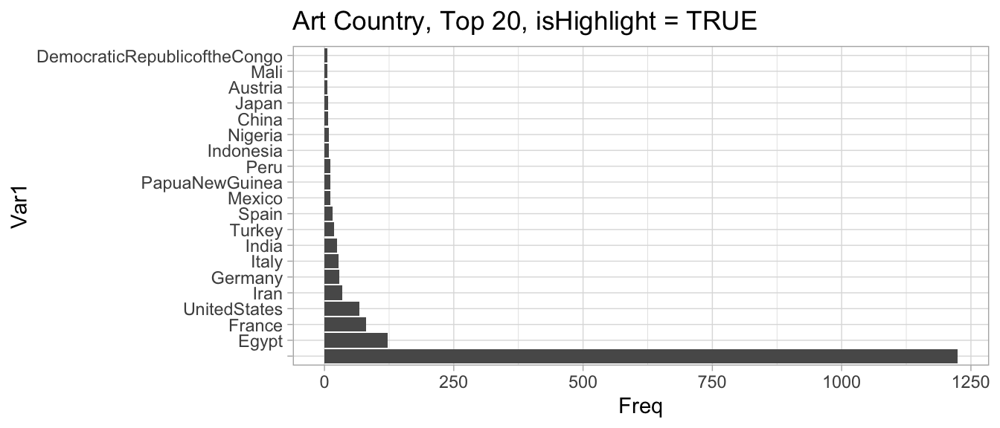
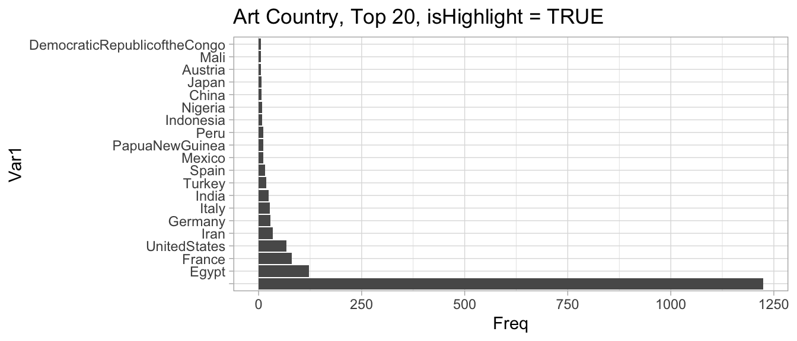
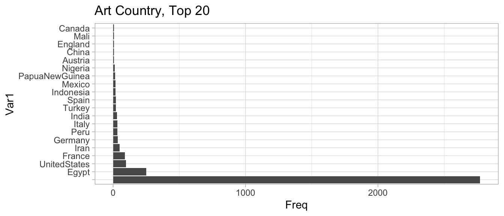

Chapter 3 Decision Tree
3.1 Exploratory Analysis
Going forward, I upsampled so the “isHighlight” has an equal number of true and false values. This will make the models less computationally heavy.

From these plots, you can tell that the most common department in the Met Collection is Drawings and Prints, followed by Greek and Roman art, photographs, and Egyptian art.
Additionally, you can tell from the second plot that the most common culture is “NA”, which just means that the culture is missing. Next is American, French, and Japan. From this graph, you can also tell the data cleaning issues with the Met’s data because it includes “Japan” and “Japanese” as different categories.
 

In these plots, we compare the frequencies of country based on whether it the artwork is a highlight or not. In both the highlight and all types graph, the most frequent country is NA, followed by Egypt. In the following countries, we can tell that the United States is under-represented in the is.Highlight = TRUE dataset, compared to the overall population. Canada and Peru are examples of other countries that follow this pattern.
The opposite is true of France, which is over-represented in the highlights. Spain, Italy, and Turkey also follow the pattern of over-representation in the Highlights.
3.2 The Model
To attempt to explain why some artworks are highlights and some are not, without actually looking at the painting, we are going to use a few different models. We will look at decision trees first.

Prune to .17 ! This plot shows how one should prune the decision tree to have the best set of cost-complexity prunings.
First we will fit a model that has as many decisions as we want, with very little of the pruning. 
Here is another visualization of the same decision tree.

The decision tree shows that the model uses classification, department, “is public domain” and subregion of the world to determine whether the artwork is a highlight of the Metropolitan Museum of Art. Interestingly, 34% of the artworks can be excluded as “not highlights” by merely the type of art it is. If something is calligraphy, metalwork, textiles, daggers, glass, or etc., they are unlikely to be important to the Met. This is a unique finding because it shows that historic arts that were more likely to be done by women, such as textiles or basketry, are not highlighted by the Met. In accordance to what we might expect, preliminary or supporting artwork, such as drawings, stencils or photo negatives, are also deemed not a highlight. Also interesting is that then the decision tree uses departments to decide, indicating that Asian Art, Costumes, Drawings, Photographs, and Egyptian Art are less indicative of a Highlight status. Older artworks, as expected, are more likely to be highlights (according to the public domain variable). In the last two decisions, we learn that jewelry, shells, enamels, and some other classifications are unlikely to indicate being a highlight, as well as the fact that certain subregions indicate that the artwork is not highlighted. Upon investigation, these subregions are all parts of Egypt that are less famous for ruins. Compared to another subregion, such as Saqqara, which is an Ancient burial ground.


Unfortunately, after pruning, the only decision that remains is based on the classification of the artwork. Basically, the model can tell most of the time that if it is not one of these categories, such as prints, plates, or books, that it will not be a highlight. It is able to have a .71 accuracy on the training set, which is a slight improvement from the previous OneR model, yet not a large enough improvement.
Thus far, our interpretable ML has shown us that we believe that the Met is more likley to deem an artwork a highlight if it is in the public domain, and it is not one of the above categories.